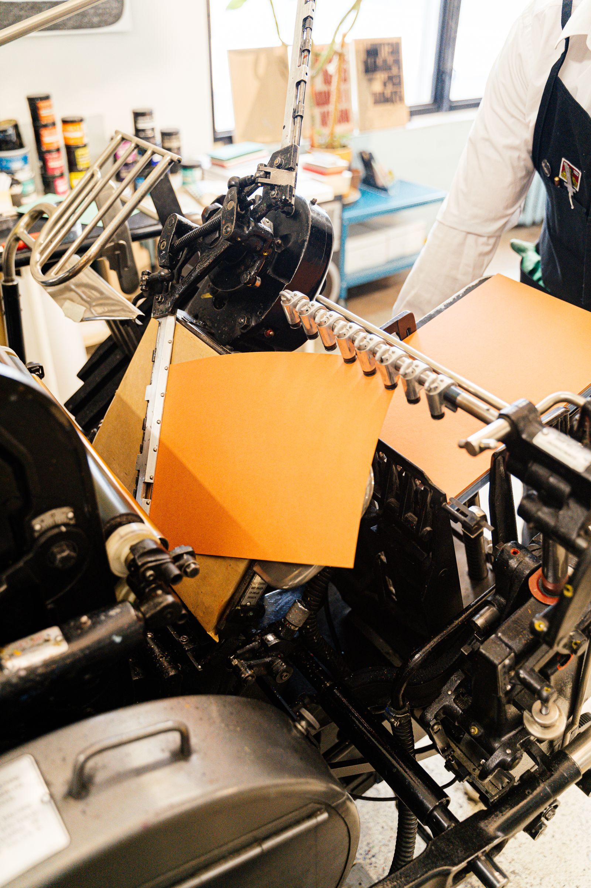
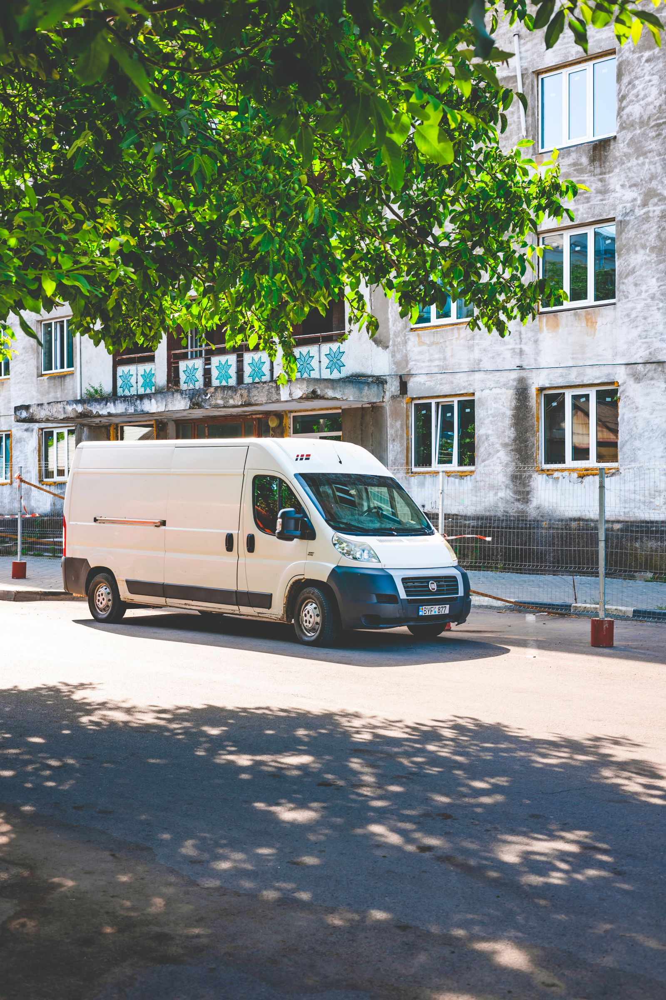

Marketingbureau voor kmo’s. Online én offline. Eén plan, één aanspreekpunt.



Wat we doen.
Alles wat een zaak zichtbaar maakt, online én offline. Je neemt wat je nodig hebt.
Strategie en merk
Wie je bent, voor wie, en wat de markt moet onthouden.
02OnlineWebsites en webshops
Een site die snel laadt, goed leest op een gsm en aanvragen binnenbrengt.
03OnlineVindbaarheid en advertenties
Gevonden worden op het moment dat iemand je dienst zoekt.
04OnlineSociale media
Planning, beeld en tekst op de kanalen waar je klanten zitten.
05OnlineFoto en video
Beeld dat je zaak echt toont, voor site, sociale media en toonbank.
06OfflineDrukwerk en huisstijl
Folders, menukaarten, visitekaartjes en verpakking.
07OfflineGevel en signalisatie
Uithangborden, raamfolie en wegwijzers.
08OfflineVoertuigen en affiches
Belettering van wagens en affiches of panelen langs de weg.
09OfflineRadio en pers
Spots die klinken zoals je zaak en berichten voor de streekpers.
10OfflineBeurzen en evenementen
Een stand die opvalt en een opening met publiek.
Wie je wagen ziet en daarna je site opent, herkent dezelfde zaak.
Eén plan
Gevel, drukwerk, site en advertentie op één kalender, zodat alles hetzelfde vertelt.
Eén aanspreekpunt
Eén persoon bij ons praat met drukker, plaatser en adverteerder. Jij hoeft dat niet te doen.
Eén uitstraling
Wie je wagen ziet en daarna je site opent, herkent dezelfde zaak.
Vier stappen.
- 1
Kennismaking
We luisteren en kijken naar wat je nu al doet, online en op papier en aan de gevel. We zeggen eerlijk wat we zouden laten liggen.
- 2
Plan op één blad
Doelen, kanalen, budget en kalender naast elkaar, zodat je ziet hoe bestelwagen, site en advertentie op elkaar aansluiten.
- 3
Uitvoering
Eén contactpersoon bij ons regelt het werk met drukker, plaatser en adverteerder. Je ziet proeven vóór er iets gedrukt of gepubliceerd wordt.
- 4
Opvolging
Elke maand een korte balans van wat het opleverde en wat we daarom anders doen.
Zo pakken we het aan.
Geen afgeronde opdrachten, maar zo zouden we het aanpakken. Echte cases volgen zodra klanten toestemming geven.

Voor wie?
- Winkels en horeca
- Bouw en installatie
- Zorg en vrije beroepen
- Producenten en handel
- Verenigingen en lokale initiatieven
Vragen?
Wat kost het?
Dat hangt af van wat je nodig hebt. Na een eerste gesprek maken we een voorstel met wat erin zit en wat het kost, zodat je kan kiezen.
Moet ik alles bij jullie nemen?
Nee. Je neemt wat je nodig hebt. Wat je neemt, sluit wel op elkaar aan: dezelfde kleuren, dezelfde woorden, dezelfde afspraken.
Wie is mijn aanspreekpunt?
Eén persoon bij ons. Die praat met drukker, plaatser, adverteerder en fotograaf, zodat jij dat niet hoeft te doen.
Wie voert de offline diensten uit?
Wij ontwerpen en coördineren. Druk, plaatsing en andere productie gebeuren met onze partners. Jij hebt één aanspreekpunt.
Doen jullie ook maar één ding, bijvoorbeeld alleen een website?
Ja, dat kan. We zeggen er wel bij wat ontbreekt als je klanten je ook op straat of op papier tegenkomen.
Vertel kort wat je zoekt.